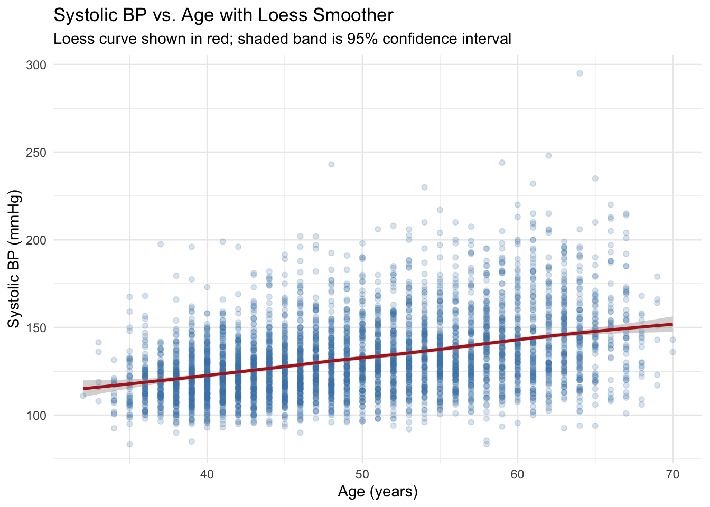
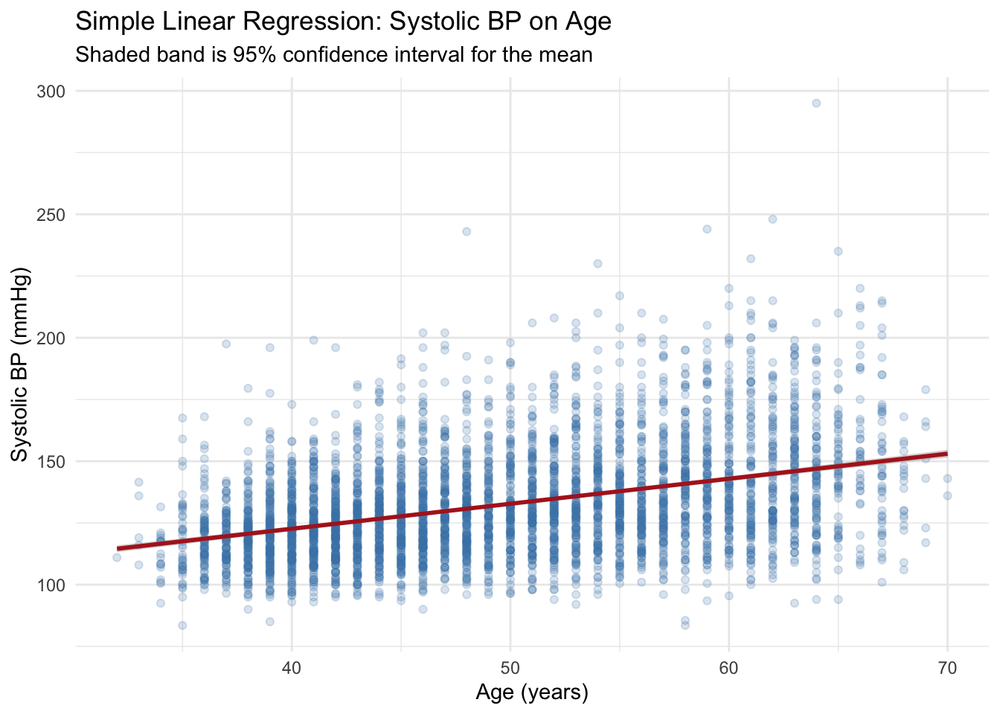
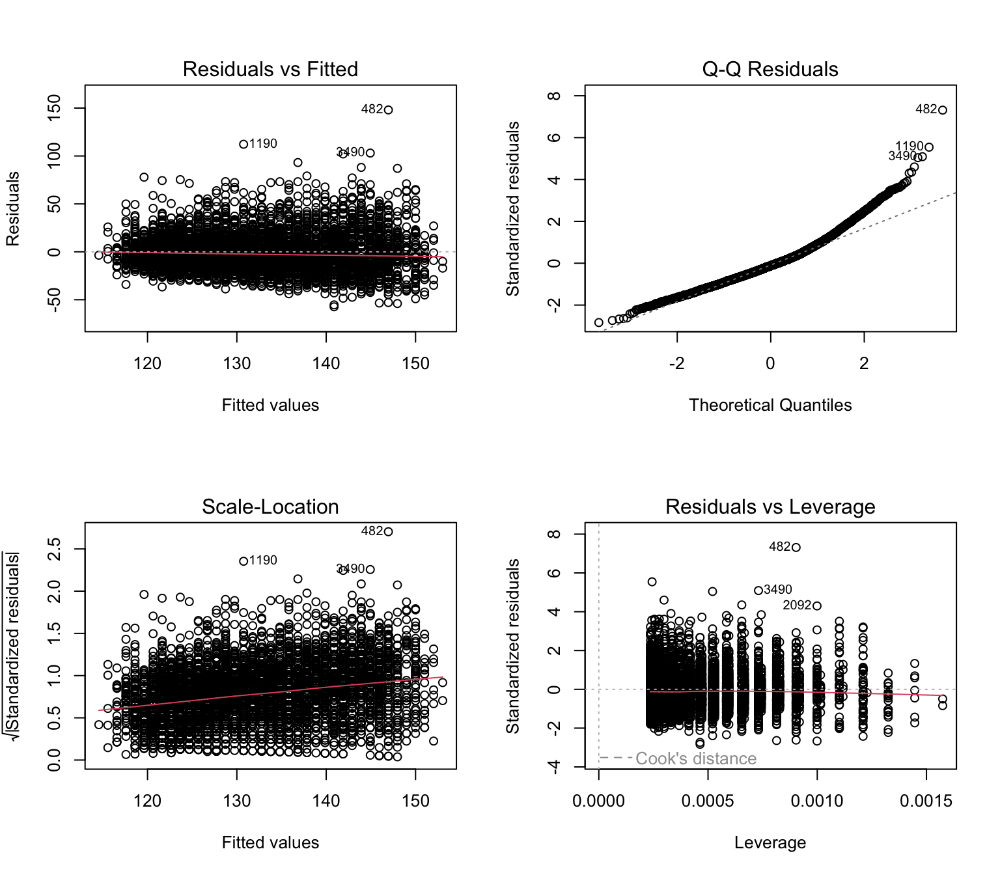
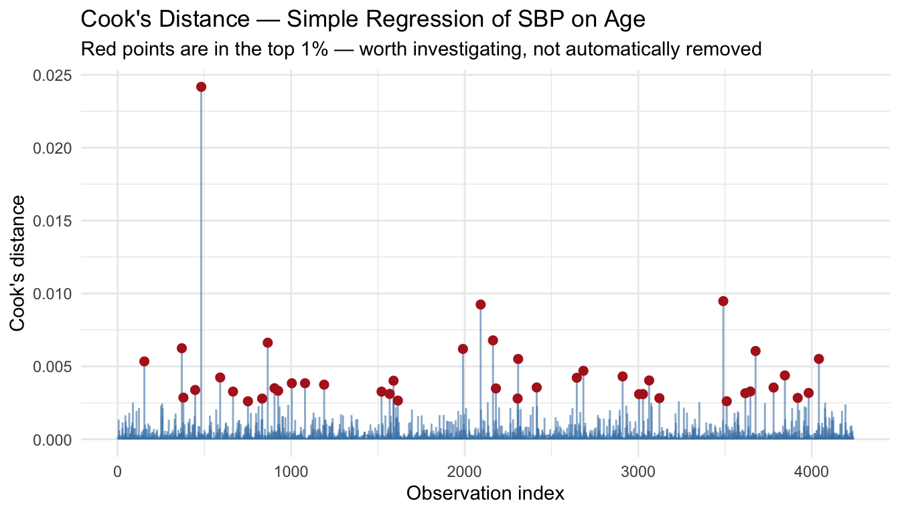
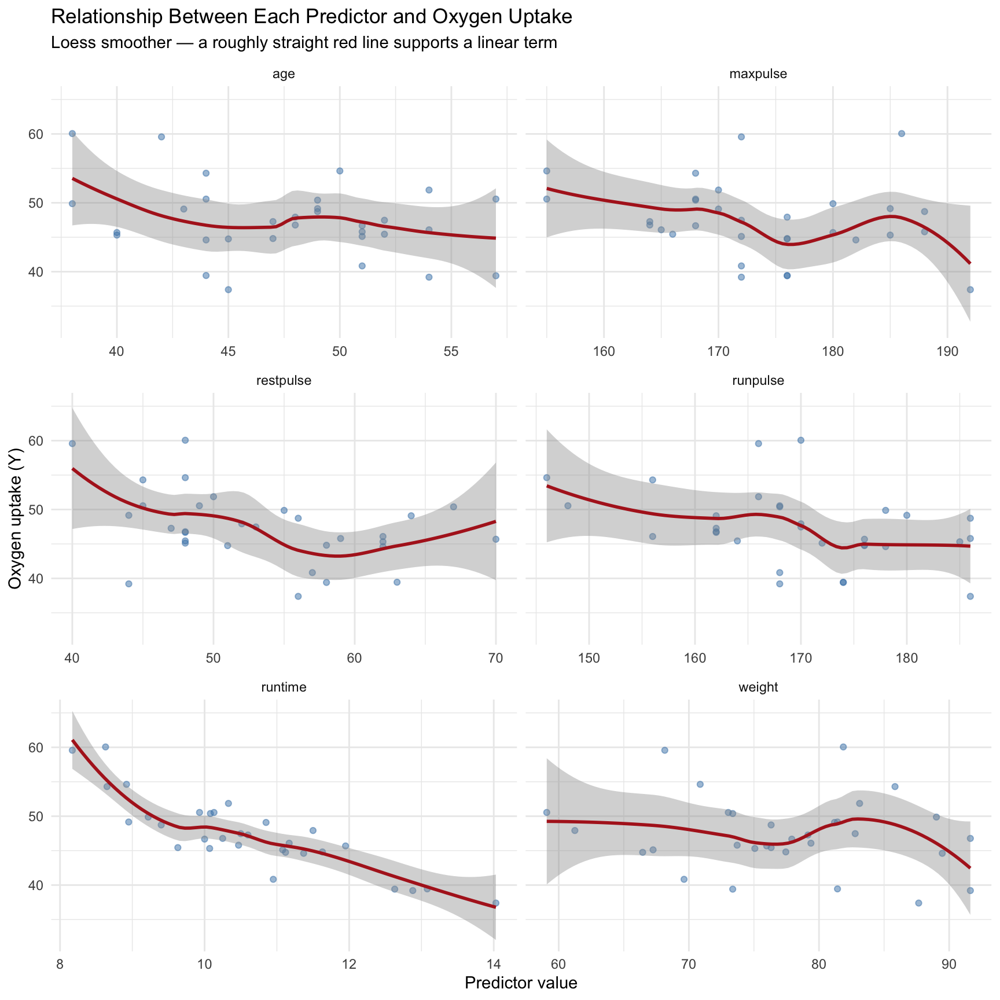
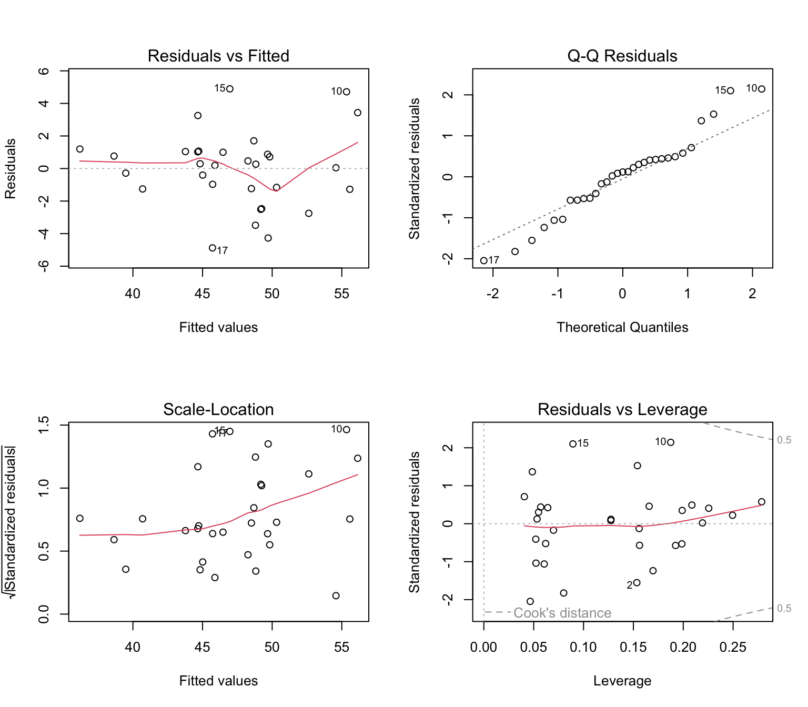
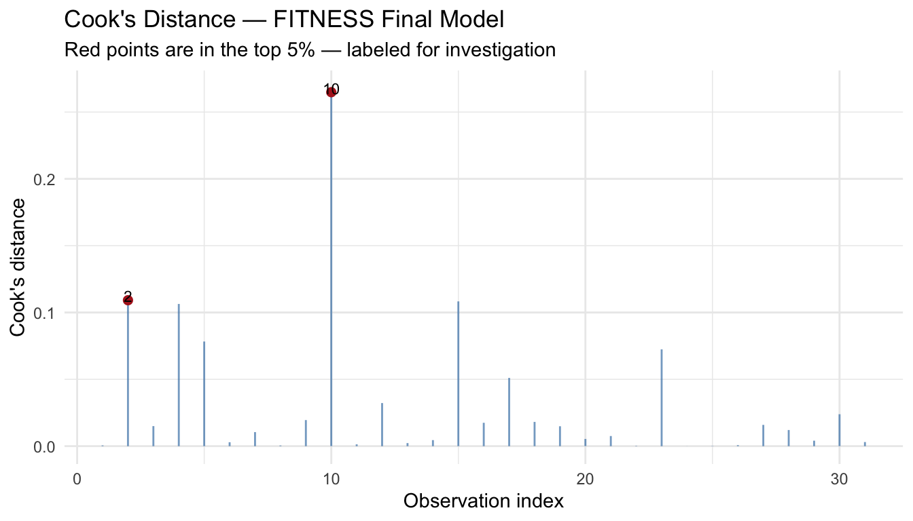
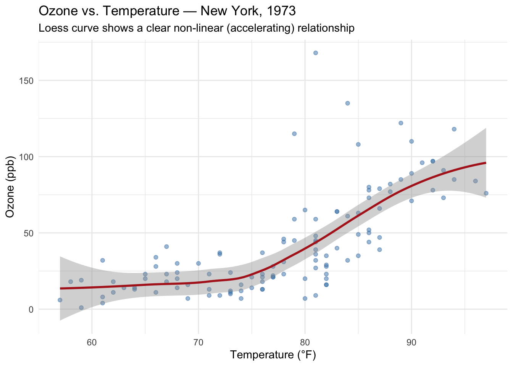
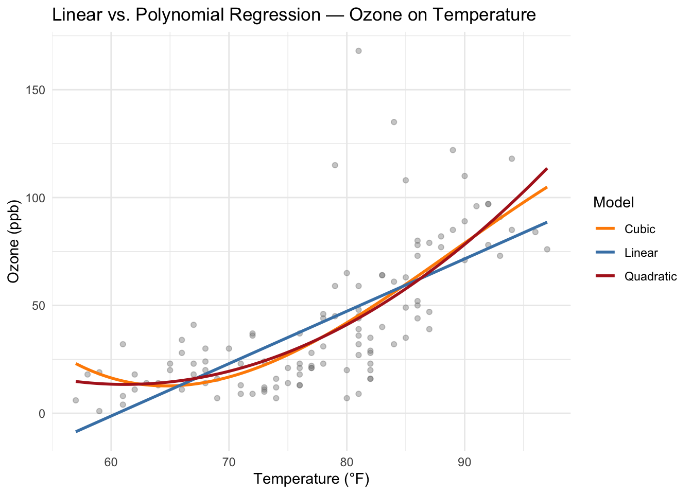
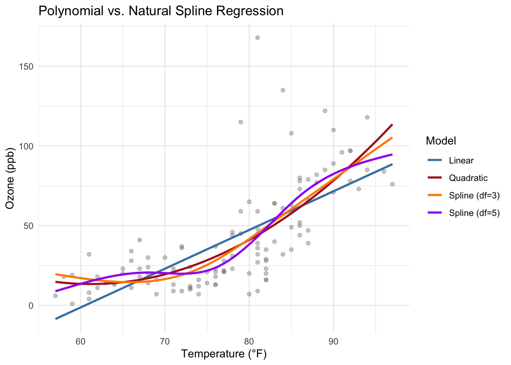

library(tidyverse)
library(this.path)
setwd(this.dir())
framingham <- read_csv("../../data/framingham.csv") |>
mutate(
male = factor(male, levels = c(0,1), labels = c("Female","Male")),
currentSmoker = factor(currentSmoker, levels = c(0,1), labels = c("Non-smoker","Smoker")),
prevalentHyp = factor(prevalentHyp, levels = c(0,1), labels = c("No","Yes")),
diabetes = factor(diabetes, levels = c(0,1), labels = c("No","Yes")),
TenYearCHD = factor(TenYearCHD, levels = c(0,1), labels = c("No","Yes")),
education = factor(education, levels = 1:4,
labels = c("Some HS","HS Diploma","Some College","College Degree"))
)Day 6: Linear Regression
SC INBRE Biostatistics Summer Intensive 2026
1 Overview
This document covers simple and multiple linear regression using two datasets:
- Example 1: Simple regression of systolic blood pressure on age (Framingham Heart Study)
- Example 2: Multiple regression for a fitness outcome using physiological measurements (FITNESS dataset)
- Example 3: Modeling non-linear relationships using polynomial terms and natural splines
2 Example 1: Systolic BP and Age (Framingham)
2.1 The Dataset
The Framingham Heart Study is a landmark longitudinal study of cardiovascular risk factors. We focus here on the relationship between age and systolic blood pressure.
framingham |>
select(age, sysBP) |>
summary() age sysBP
Min. :32.00 Min. : 83.5
1st Qu.:42.00 1st Qu.:117.0
Median :49.00 Median :128.0
Mean :49.58 Mean :132.4
3rd Qu.:56.00 3rd Qu.:144.0
Max. :70.00 Max. :295.0 2.2 Checking Variable Form Before Modeling
Before fitting any regression model, the first step is to visually inspect the relationship between the predictor and the outcome. This answers the key question: is a linear model appropriate here?
We use geom_smooth(method = "loess") to overlay a flexible smoothed curve on the scatterplot. If the loess curve follows a roughly straight line, a linear model is appropriate. If it bends substantially, we may need to consider a non-linear approach (covered in Example 3).
ggplot(framingham, aes(x = age, y = sysBP)) +
geom_point(alpha = 0.2, color = "steelblue") +
geom_smooth(method = "loess", color = "firebrick", se = TRUE, linewidth = 1) +
labs(x = "Age (years)", y = "Systolic BP (mmHg)",
title = "Systolic BP vs. Age with Loess Smoother",
subtitle = "Loess curve shown in red; shaded band is 95% confidence interval") +
theme_minimal()
The loess smoother follows a nearly straight path across the age range, confirming that a linear model is a reasonable choice here.
2.3 A Note on Variable Form
A common modeling mistake is to take a continuous variable and convert it to categories. For example, splitting age into groups of 10 years. This:
- Throws away information by treating everyone in a group as identical
- Assumes a step change at the cutpoint rather than a smooth effect
- Reduces statistical power
- Can produce misleading conclusions depending on where cutpoints are placed
The comparison below illustrates the issue:
# The wrong approach: categorize a continuous variable
framingham_grouped <- framingham |>
mutate(age_group = cut(age, breaks = c(30, 40, 50, 60, 70),
labels = c("30-40", "40-50", "50-60", "60-70"),
include.lowest = TRUE))
# Good model: treat age as continuous
good_model <- lm(sysBP ~ age, data = framingham)
# Poor model: treat age as categorical
bad_model <- lm(sysBP ~ age_group, data = framingham_grouped)
# Compare AIC: lower is better
AIC(good_model, bad_model) df AIC
good_model 3 37546.97
bad_model 5 37622.32The continuous model has a lower AIC, meaning it fits the data better using fewer degrees of freedom. Use continuous variables as continuous unless there is a strong biological reason to categorize.
2.4 Fitting the Model
The simple linear regression model is:
\[Y = \beta_0 + \beta_1 X + \varepsilon\]
where \(Y\) is systolic blood pressure, \(X\) is age, \(\beta_0\) is the intercept, \(\beta_1\) is the slope, and \(\varepsilon\) is the error term.
sbp_model <- lm(sysBP ~ age, data = framingham)
summary(sbp_model)
Call:
lm(formula = sysBP ~ age, data = framingham)
Residuals:
Min 1Q Median 3Q Max
-57.382 -13.627 -2.627 10.182 148.042
Coefficients:
Estimate Std. Error t value Pr(>|t|)
(Intercept) 82.14199 1.82570 44.99 <2e-16 ***
age 1.01276 0.03628 27.91 <2e-16 ***
---
Signif. codes: 0 '***' 0.001 '**' 0.01 '*' 0.05 '.' 0.1 ' ' 1
Residual standard error: 20.25 on 4238 degrees of freedom
Multiple R-squared: 0.1553, Adjusted R-squared: 0.1551
F-statistic: 779 on 1 and 4238 DF, p-value: < 2.2e-16Interpreting the output:
- Intercept (\(\hat\beta_0\) = 82.14): The estimated mean systolic BP for a participant aged zero — not directly interpretable here, but necessary to define the line.
- Age (\(\hat\beta_1\) = 1.01): For each additional year of age, systolic BP is estimated to increase by 1.01 mmHg on average, holding all else constant.
- R²: The model explains 15.5% of the variability in systolic BP.
- p-value: Age is a highly significant predictor of systolic BP.
2.5 Confidence Intervals for Coefficients
confint(sbp_model) 2.5 % 97.5 %
(Intercept) 78.5626554 85.721320
age 0.9416181 1.083893We are 95% confident that the true slope for age lies between the bounds above.
2.6 Plotting the Regression Line
ggplot(framingham, aes(x = age, y = sysBP)) +
geom_point(alpha = 0.2, color = "steelblue") +
geom_smooth(method = "lm", color = "firebrick", se = TRUE, linewidth = 1) +
labs(x = "Age (years)", y = "Systolic BP (mmHg)",
title = "Simple Linear Regression: Systolic BP on Age",
subtitle = "Shaded band is 95% confidence interval for the mean") +
theme_minimal()
2.7 Model Diagnostics
After fitting the model, we check four standard diagnostic plots. Each tests a different assumption.
par(mfrow = c(2, 2))
plot(sbp_model)
par(mfrow = c(1, 1))What to look for in each panel:
- Residuals vs. Fitted: Points should scatter randomly around zero with no pattern. A curved pattern suggests the linearity assumption is violated; a funnel shape suggests non-constant variance (heteroscedasticity).
- Normal Q-Q: Points should fall approximately along the diagonal line. Heavy tails or systematic departure from the line suggest the normality assumption may be violated.
- Scale-Location: The spread of standardized residuals should be roughly constant across fitted values. An upward or downward trend indicates heteroscedasticity.
- Residuals vs. Leverage: Points in the upper or lower right have both high leverage (unusual predictor values) and high influence on the fitted line. Named points are worth investigating.
2.8 Influential Observations: Cook’s Distance
Cook’s distance measures how much the fitted values would change if a given observation were removed. Rather than applying a formula-based cutoff, look for observations that stand clearly apart from the rest.
cooks_df <- tibble(
obs = seq_along(cooks.distance(sbp_model)),
cooks = cooks.distance(sbp_model)
)
ggplot(cooks_df, aes(x = obs, y = cooks)) +
geom_segment(aes(xend = obs, yend = 0), color = "steelblue", alpha = 0.6) +
geom_point(data = filter(cooks_df, cooks > quantile(cooks, 0.99)),
color = "firebrick", size = 2) +
labs(x = "Observation index", y = "Cook's distance",
title = "Cook's Distance — Simple Regression of SBP on Age",
subtitle = "Red points are in the top 1% — worth investigating, not automatically removed") +
theme_minimal()
Points with notably large Cook’s distances warrant investigation. Check whether they are data entry errors, legitimate extreme values, or part of a distinct subgroup. Do not remove them automatically.
Here, the largest Cook’s value is:
framingham[which.max(cooks_df$cooks),c("age","sysBP")]# A tibble: 1 × 2
age sysBP
<dbl> <dbl>
1 64 295summary(framingham[,c("age","sysBP")]) age sysBP
Min. :32.00 Min. : 83.5
1st Qu.:42.00 1st Qu.:117.0
Median :49.00 Median :128.0
Mean :49.58 Mean :132.4
3rd Qu.:56.00 3rd Qu.:144.0
Max. :70.00 Max. :295.0 2.9 ANOVA Table
summary(bad_model)$coefficients Estimate Std. Error t value Pr(>|t|)
(Intercept) 120.789439 0.7469530 161.709553 0.000000e+00
age_group40-50 7.270226 0.9040554 8.041792 1.138923e-15
age_group50-60 17.094381 0.9370077 18.243586 1.207732e-71
age_group60-70 25.988627 1.1308095 22.982320 3.003567e-110anova(bad_model)Analysis of Variance Table
Response: sysBP
Df Sum Sq Mean Sq F value Pr(>F)
age_group 3 290047 96682 231.66 < 2.2e-16 ***
Residuals 4236 1767845 417
---
Signif. codes: 0 '***' 0.001 '**' 0.01 '*' 0.05 '.' 0.1 ' ' 1The ANOVA F-test evaluates is useful when we have grouped variables (like here). Notice that the ANOVA gives one test for the significance of the grouped age variable. This is very useful for variables that are factors.
3 Example 2: Multiple Regression — FITNESS Dataset
3.1 The Dataset
This dataset contains physiological measurements from 31 middle-aged men and a measure of oxygen uptake capacity (Y, in mL/kg/min) collected during a fitness test. The goal is to predict Y from exercise-related measurements.
FITNESS <- tibble(
age = c(44,40,44,42,38,47,40,43,44,38,44,45,45,47,54,
49,51,51,48,49,57,54,52,50,51,54,51,57,49,48,52),
weight = c(89.47,75.07,85.84,68.15,89.02,77.45,75.98,81.19,
81.42,81.87,73.03,87.66,66.45,79.15,83.12,81.42,
69.63,77.91,91.63,73.37,73.37,79.38,76.32,70.87,
67.25,91.63,73.71,59.08,76.32,61.24,82.78),
runtime = c(11.37,10.07,8.65,8.17,9.22,11.63,11.95,10.85,
13.08,8.63,10.13,14.03,11.12,10.60,10.33,8.95,
10.95,10.00,10.25,10.08,12.63,11.17,9.63,8.92,
11.08,12.88,10.47,9.93,9.40,11.50,10.50),
restpulse = c(62,62,45,40,55,58,70,64,63,48,45,56,51,47,50,
44,57,48,48,67,58,62,48,48,48,44,59,49,56,52,53),
runpulse = c(178,185,156,166,178,176,176,162,174,170,168,186,
176,162,166,180,168,162,162,168,174,156,164,146,
172,168,186,148,186,170,170),
maxpulse = c(182,185,168,172,180,176,180,170,176,186,168,192,
176,164,170,185,172,168,164,168,176,165,166,155,
172,172,188,155,188,176,172),
Y = c(44.609,45.313,54.297,59.571,49.874,44.811,45.681,
49.091,39.442,60.055,50.541,37.388,44.754,47.273,
51.855,49.156,40.836,46.672,46.774,50.388,39.407,
46.080,45.441,54.625,45.118,39.203,45.790,50.545,
48.730,47.920,47.467)
)
glimpse(FITNESS)Rows: 31
Columns: 7
$ age <dbl> 44, 40, 44, 42, 38, 47, 40, 43, 44, 38, 44, 45, 45, 47, 54, …
$ weight <dbl> 89.47, 75.07, 85.84, 68.15, 89.02, 77.45, 75.98, 81.19, 81.4…
$ runtime <dbl> 11.37, 10.07, 8.65, 8.17, 9.22, 11.63, 11.95, 10.85, 13.08, …
$ restpulse <dbl> 62, 62, 45, 40, 55, 58, 70, 64, 63, 48, 45, 56, 51, 47, 50, …
$ runpulse <dbl> 178, 185, 156, 166, 178, 176, 176, 162, 174, 170, 168, 186, …
$ maxpulse <dbl> 182, 185, 168, 172, 180, 176, 180, 170, 176, 186, 168, 192, …
$ Y <dbl> 44.609, 45.313, 54.297, 59.571, 49.874, 44.811, 45.681, 49.0…3.2 Checking Variable Form for Each Predictor
Before fitting any model, inspect the relationship between each predictor and the outcome. We use a loess smoother to detect non-linearity. If the loess curve is approximately straight, a linear term is appropriate. If it bends substantially, a non-linear term may be needed (see Example 3).
FITNESS |>
pivot_longer(cols = c(age, weight, runtime, restpulse, runpulse, maxpulse),
names_to = "predictor", values_to = "value") |>
ggplot(aes(x = value, y = Y)) +
geom_point(alpha = 0.5, color = "steelblue") +
geom_smooth(method = "loess", color = "firebrick", se = TRUE, linewidth = 1) +
facet_wrap(~ predictor, scales = "free_x", ncol = 2) +
labs(x = "Predictor value", y = "Oxygen uptake (Y)",
title = "Relationship Between Each Predictor and Oxygen Uptake",
subtitle = "Loess smoother — a roughly straight red line supports a linear term") +
theme_minimal()
What to look for:
runtimeshows a clear negative linear relationship — faster runners have higher oxygen uptake. A linear term is appropriate.age,weight,runpulse, andmaxpulseshow roughly linear relationships, though with more scatter.restpulseshows the weakest and noisiest relationship.
The loess curves do not reveal strong non-linearity for any predictor, so we proceed with linear terms throughout.
3.3 Full Model
We begin with a model containing all six predictors.
model_full <- lm(Y ~ age + weight + runtime + restpulse + runpulse + maxpulse,
data = FITNESS)
summary(model_full)
Call:
lm(formula = Y ~ age + weight + runtime + restpulse + runpulse +
maxpulse, data = FITNESS)
Residuals:
Min 1Q Median 3Q Max
-5.4052 -0.8967 0.0744 1.0505 5.3804
Coefficients:
Estimate Std. Error t value Pr(>|t|)
(Intercept) 102.83508 12.40437 8.290 1.67e-08 ***
age -0.22629 0.09985 -2.266 0.03272 *
weight -0.07417 0.05460 -1.359 0.18693
runtime -2.63183 0.38460 -6.843 4.46e-07 ***
restpulse -0.02134 0.06606 -0.323 0.74943
runpulse -0.36933 0.11986 -3.081 0.00511 **
maxpulse 0.30345 0.13651 2.223 0.03589 *
---
Signif. codes: 0 '***' 0.001 '**' 0.01 '*' 0.05 '.' 0.1 ' ' 1
Residual standard error: 2.317 on 24 degrees of freedom
Multiple R-squared: 0.8487, Adjusted R-squared: 0.8108
F-statistic: 22.43 on 6 and 24 DF, p-value: 9.716e-09Initial observations from the full model:
runtimeis the strongest predictor by far (highly significant, large coefficient relative to its scale).weightandrestpulseappear non-significant individually.runpulseandmaxpulseare correlated — including both may cause redundancy (multicollinearity).
3.4 Model Selection
Rather than relying solely on individual p-values to drop predictors (which can be misleading), we use AIC-based stepwise selection. AIC (Akaike Information Criterion) balances model fit against complexity — lower is better.
model_step <- step(model_full, direction = "both", trace = 0)
summary(model_step)
Call:
lm(formula = Y ~ age + weight + runtime + runpulse + maxpulse,
data = FITNESS)
Residuals:
Min 1Q Median 3Q Max
-5.4744 -0.8457 0.0074 0.9989 5.3764
Coefficients:
Estimate Std. Error t value Pr(>|t|)
(Intercept) 102.11135 11.97990 8.524 7.26e-09 ***
age -0.21901 0.09551 -2.293 0.03053 *
weight -0.07231 0.05331 -1.356 0.18709
runtime -2.68522 0.34100 -7.874 3.13e-08 ***
runpulse -0.37307 0.11715 -3.185 0.00386 **
maxpulse 0.30513 0.13394 2.278 0.03154 *
---
Signif. codes: 0 '***' 0.001 '**' 0.01 '*' 0.05 '.' 0.1 ' ' 1
Residual standard error: 2.275 on 25 degrees of freedom
Multiple R-squared: 0.848, Adjusted R-squared: 0.8176
F-statistic: 27.9 on 5 and 25 DF, p-value: 1.809e-09AIC(model_full, model_step) df AIC
model_full 8 148.1414
model_step 7 146.2759The stepwise procedure identifies a reduced model. We can also compare specific nested models directly using anova():
model_reduced <- lm(Y ~ age + runtime + runpulse + maxpulse, data = FITNESS)
# Does adding weight and restpulse improve the model?
anova(model_reduced, model_full)Analysis of Variance Table
Model 1: Y ~ age + runtime + runpulse + maxpulse
Model 2: Y ~ age + weight + runtime + restpulse + runpulse + maxpulse
Res.Df RSS Df Sum of Sq F Pr(>F)
1 26 138.95
2 24 128.86 2 10.085 0.9392 0.4049The ANOVA F-test compares the reduced and full models. A non-significant p-value means the extra predictors do not meaningfully improve fit — we prefer the simpler model.
# Does including maxpulse improve the model over runtime + age + runpulse?
model_3pred <- lm(Y ~ age + runtime + runpulse, data = FITNESS)
anova(model_3pred, model_reduced)Analysis of Variance Table
Model 1: Y ~ age + runtime + runpulse
Model 2: Y ~ age + runtime + runpulse + maxpulse
Res.Df RSS Df Sum of Sq F Pr(>F)
1 27 160.88
2 26 138.95 1 21.936 4.1046 0.05314 .
---
Signif. codes: 0 '***' 0.001 '**' 0.01 '*' 0.05 '.' 0.1 ' ' 1Based on both AIC and the formal F-test, we select the model with age, runtime, and runpulse as the final model.
3.5 Final Model
final_model <- lm(Y ~ age + runtime + runpulse, data = FITNESS)
summary(final_model)
Call:
lm(formula = Y ~ age + runtime + runpulse, data = FITNESS)
Residuals:
Min 1Q Median 3Q Max
-4.8771 -1.2456 0.2661 1.0330 4.8952
Coefficients:
Estimate Std. Error t value Pr(>|t|)
(Intercept) 111.63525 10.23671 10.905 2.14e-11 ***
age -0.25583 0.09624 -2.658 0.0130 *
runtime -2.82814 0.35834 -7.892 1.74e-08 ***
runpulse -0.13040 0.05060 -2.577 0.0157 *
---
Signif. codes: 0 '***' 0.001 '**' 0.01 '*' 0.05 '.' 0.1 ' ' 1
Residual standard error: 2.441 on 27 degrees of freedom
Multiple R-squared: 0.8111, Adjusted R-squared: 0.7901
F-statistic: 38.64 on 3 and 27 DF, p-value: 6.569e-10Interpreting the final model:
runtime: Each additional minute of runtime is associated with a decrease of 2.83 mL/kg/min in oxygen uptake, holding age and run pulse constant. Slower runners have lower fitness.runpulse: Each additional beat per minute in run pulse is associated with a decrease of 0.13 mL/kg/min in oxygen uptake, holding age and runtime constant.age: Each additional year of age is associated with a decrease of 0.26 mL/kg/min, holding runtime and run pulse constant.- R²: The model explains 81.1% of the variability in oxygen uptake.
3.6 Confidence Intervals for Coefficients
confint(final_model) 2.5 % 97.5 %
(Intercept) 90.6312557 132.63924859
age -0.4533043 -0.05835085
runtime -3.5633851 -2.09289059
runpulse -0.2342167 -0.026579133.7 Model Diagnostics
par(mfrow = c(2, 2))
plot(final_model)
par(mfrow = c(1, 1))The diagnostic plots for the final model should be interpreted as described in Example 1. Look for:
- No strong patterns in Residuals vs. Fitted
- Points roughly following the diagonal in the Q-Q plot
- Roughly constant spread in Scale-Location
- No points with simultaneously high leverage and large residuals
3.8 Cook’s Distance
cooks_fit <- tibble(
obs = seq_along(cooks.distance(final_model)),
cooks = cooks.distance(final_model)
)
ggplot(cooks_fit, aes(x = obs, y = cooks)) +
geom_segment(aes(xend = obs, yend = 0), color = "steelblue", alpha = 0.7) +
geom_point(data = filter(cooks_fit, cooks > quantile(cooks, 0.95)),
color = "firebrick", size = 2) +
geom_text(data = filter(cooks_fit, cooks > quantile(cooks, 0.95)),
aes(label = obs), nudge_y = 0.003, size = 3) +
labs(x = "Observation index", y = "Cook's distance",
title = "Cook's Distance — FITNESS Final Model",
subtitle = "Red points are in the top 5% — labeled for investigation") +
theme_minimal()
Here, the largest Cook’s value is:
FITNESS[c(10),]# A tibble: 1 × 7
age weight runtime restpulse runpulse maxpulse Y
<dbl> <dbl> <dbl> <dbl> <dbl> <dbl> <dbl>
1 38 81.9 8.63 48 170 186 60.1summary(FITNESS) age weight runtime restpulse
Min. :38.00 Min. :59.08 Min. : 8.17 Min. :40.00
1st Qu.:44.00 1st Qu.:73.20 1st Qu.: 9.78 1st Qu.:48.00
Median :48.00 Median :77.45 Median :10.47 Median :52.00
Mean :47.68 Mean :77.44 Mean :10.59 Mean :53.45
3rd Qu.:51.00 3rd Qu.:82.33 3rd Qu.:11.27 3rd Qu.:58.50
Max. :57.00 Max. :91.63 Max. :14.03 Max. :70.00
runpulse maxpulse Y
Min. :146.0 Min. :155.0 Min. :37.39
1st Qu.:163.0 1st Qu.:168.0 1st Qu.:44.96
Median :170.0 Median :172.0 Median :46.77
Mean :169.6 Mean :173.8 Mean :47.38
3rd Qu.:176.0 3rd Qu.:180.0 3rd Qu.:50.13
Max. :186.0 Max. :192.0 Max. :60.05 3.9 Prediction Intervals
We can generate predictions for new participants. Confidence intervals give the range for the mean response; prediction intervals give the range for an individual new observation (always wider).
new_participants <- tibble(
age = c(45, 50),
runtime = c(10.0, 11.5),
runpulse = c(168, 175)
)
# Confidence interval for the mean response
predict(final_model, newdata = new_participants, interval = "confidence") |>
as_tibble() |>
bind_cols(new_participants) |>
select(age, runtime, runpulse, everything()) |>
round(3)# A tibble: 2 × 6
age runtime runpulse fit lwr upr
<dbl> <dbl> <dbl> <dbl> <dbl> <dbl>
1 45 10 168 49.9 48.9 51.0
2 50 11.5 175 43.5 42.3 44.7# Prediction interval for individual observations
predict(final_model, newdata = new_participants, interval = "prediction") |>
as_tibble() |>
bind_cols(new_participants) |>
select(age, runtime, runpulse, everything()) |>
round(3)# A tibble: 2 × 6
age runtime runpulse fit lwr upr
<dbl> <dbl> <dbl> <dbl> <dbl> <dbl>
1 45 10 168 49.9 44.8 55.1
2 50 11.5 175 43.5 38.3 48.7Prediction intervals are substantially wider than confidence intervals because they must account for individual-level variability in addition to uncertainty in the mean.
4 Modeling Non-Linear Relationships
4.1 When Linearity Fails
The loess-based checks above are key to detecting non-linearity. When the smoothed curve bends substantially, a linear model will be mis-specified and its predictions will be systematically biased.
To illustrate, we use the airquality dataset (built into R), which records daily ozone levels and temperature in New York. The relationship between temperature and ozone is clearly non-linear.
airquality_clean <- airquality |>
as_tibble() |>
filter(!is.na(Ozone), !is.na(Temp))
ggplot(airquality_clean, aes(x = Temp, y = Ozone)) +
geom_point(alpha = 0.5, color = "steelblue") +
geom_smooth(method = "loess", color = "firebrick", se = TRUE, linewidth = 1) +
labs(x = "Temperature (°F)", y = "Ozone (ppb)",
title = "Ozone vs. Temperature — New York, 1973",
subtitle = "Loess curve shows a clear non-linear (accelerating) relationship") +
theme_minimal()
The loess curve rises steeply at high temperatures, indicating that a linear term for temperature will underfit the data.
4.2 Option 1: Polynomial Terms with poly()
poly(x, degree) adds powered versions of the predictor (\(x^2\), \(x^3\), etc.) to the model. This allows the regression line to bend.
model_linear <- lm(Ozone ~ Temp, data = airquality_clean)
model_quad <- lm(Ozone ~ poly(Temp, 2), data = airquality_clean)
model_cubic <- lm(Ozone ~ poly(Temp, 3), data = airquality_clean)
AIC(model_linear, model_quad, model_cubic) df AIC
model_linear 3 1067.706
model_quad 4 1056.148
model_cubic 5 1056.925The quadratic model has the lowest AIC, suggesting that adding a squared term captures the non-linearity well without overfitting.
temp_grid <- tibble(Temp = seq(min(airquality_clean$Temp),
max(airquality_clean$Temp), length.out = 200))
preds <- temp_grid |>
mutate(
Linear = predict(model_linear, newdata = temp_grid),
Quadratic = predict(model_quad, newdata = temp_grid),
Cubic = predict(model_cubic, newdata = temp_grid)
) |>
pivot_longer(cols = c(Linear, Quadratic, Cubic),
names_to = "Model", values_to = "Ozone")
ggplot(airquality_clean, aes(x = Temp, y = Ozone)) +
geom_point(alpha = 0.4, color = "gray50") +
geom_line(data = preds, aes(color = Model), linewidth = 1) +
scale_color_manual(values = c("Linear" = "steelblue",
"Quadratic" = "firebrick",
"Cubic" = "darkorange")) +
labs(x = "Temperature (°F)", y = "Ozone (ppb)",
title = "Linear vs. Polynomial Regression — Ozone on Temperature",
color = "Model") +
theme_minimal()
The linear fit systematically underestimates ozone at high and low temperatures. The quadratic and cubic fits both capture the curvature well.
4.3 Option 2: Natural Splines with splines::ns()
Natural splines are a more flexible alternative to polynomials. Instead of a single polynomial across the whole range, splines fit separate polynomial pieces connected at knots, producing smoother curves that do not behave erratically at the extremes.
library(splines)
model_spline3 <- lm(Ozone ~ ns(Temp, df = 3), data = airquality_clean)
model_spline5 <- lm(Ozone ~ ns(Temp, df = 5), data = airquality_clean)
AIC(model_linear, model_quad, model_spline3, model_spline5) df AIC
model_linear 3 1067.706
model_quad 4 1056.148
model_spline3 5 1055.413
model_spline5 7 1055.516preds2 <- temp_grid |>
mutate(
Linear = predict(model_linear, newdata = temp_grid),
Quadratic = predict(model_quad, newdata = temp_grid),
"Spline (df=3)" = predict(model_spline3, newdata = temp_grid),
"Spline (df=5)" = predict(model_spline5, newdata = temp_grid)
) |>
pivot_longer(cols = -Temp, names_to = "Model", values_to = "Ozone")
ggplot(airquality_clean, aes(x = Temp, y = Ozone)) +
geom_point(alpha = 0.4, color = "gray50") +
geom_line(data = preds2, aes(color = Model), linewidth = 1) +
scale_color_manual(values = c(
"Linear" = "steelblue",
"Quadratic" = "firebrick",
"Spline (df=3)" = "darkorange",
"Spline (df=5)" = "purple"
)) +
labs(x = "Temperature (°F)", y = "Ozone (ppb)",
title = "Polynomial vs. Natural Spline Regression",
color = "Model") +
theme_minimal()
Tip
Which to use? Natural splines are generally preferred over polynomials for flexibility with fewer pathological behaviors at the extremes of the predictor range. For most biological applications, df = 3 or df = 4 is a reasonable starting point. Use AIC to compare and choose.
4.4 Applying Non-Linear Terms in Multiple Regression
Non-linear terms can be included in a multiple regression model just like any other term:
# Fit the final FITNESS model but allow runtime to have a non-linear effect
fitness_spline <- lm(Y ~ age + ns(runtime, df = 3) + runpulse, data = FITNESS)
AIC(final_model, fitness_spline) df AIC
final_model 5 149.0213
fitness_spline 7 149.0196Compare the AIC of the spline model to the linear model. If the spline model does not meaningfully reduce AIC, the simpler linear term is preferred. This is how you decide whether non-linearity is worth modeling for a given predictor.
Here, the AIC only reduces slightly, so I would keep the original final model. I tried non-linear fits for the other variables, and did not see any gains.